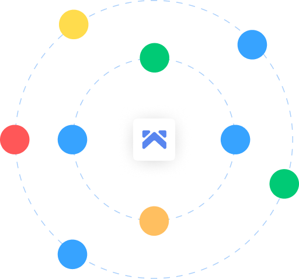

<section class="bg-[#043873] flex justify-between items-center px-40 py-20">
    <div class="flex flex-col gap-7">
        <p class="text-6xl text-white font-bold w-[700px] leading-[70px]">Get More Done with whitepace</p>

        <p class="text-lg text-white w-[600px] leading-[25px]">Project management software that enables your teams
            to collaborate, plan, analyze and manage everyday
            tasks</p>

        <button
            class="flex items-center justify-center gap-3 mt-7 w-[300px] bg-[#4F9CF9] font-semibold text-lg rounded-md px-6 py-2">
            <span class="text-white">Try Whitepace free</span>
            
        </button>
    </div>
    


    
</section>